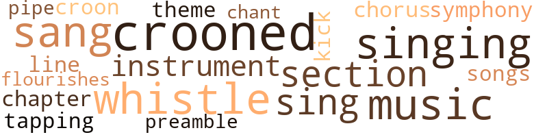
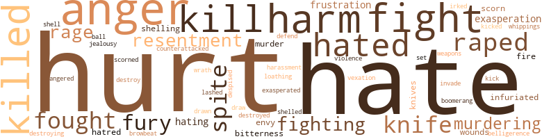
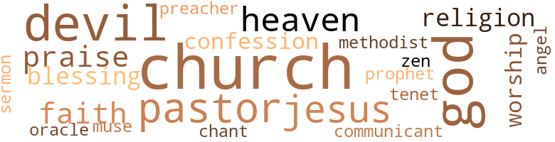

Esther, by Vroman, Mary Elizabeth (1963)
35 music-related terms matched in this text.
Most frequent terms in this topic: crooned (4); sang (3); singing (3); whistle (3); music (3)
chant.n.01
Definition: a repetitive song in which as many syllables as necessary are assigned to a single tone
| word | sentence |
|---|---|
| chant | And somewhere , a muffled echo of her own chant - Sam , hold ' ng his wife 's mangled body and sobbing , " Oh , Gawd , Lucy ! |
chapter.n.01
Definition: a subdivision of a written work; usually numbered and titled
| word | sentence |
|---|---|
| chapter | The first chapter is about the Uses of Great Men . |
chorus.n.01
Definition: any utterance produced simultaneously by a group
| word | sentence |
|---|---|
| chorus | Esther exclaimed , in chorus with the six young men . |
croon.v.01
Definition: sing softly
| word | sentence |
|---|---|
| crooned | I understand , " she crooned . |
| croon | And Lucy began to rock it gently and to croon in a whisper , " Hush now ! |
| crooned | That night , and every other night before she went off to college , Esther took her child home with her ; sang to her ; nursed her at the breasts from which she would be too soon completely weaned ; examined and kissed each perfect finger , each toe ; crooned endlessly in the quiet of the night , " Moth - er 's here , Baby . |
| crooned | I 'm thirty-one , Sam , and I always been sickly ... " He rocked her in his big arms , like a child , and he crooned , " Do n't be scared , Honey . |
| crooned | When she returned , Mitch , powdered and diapered , was being gently rocked and crooned to by his sister . |
flourish.n.05
Definition: (music) a short lively tune played on brass instruments
| word | sentence |
|---|---|
| flourishes | The front page was inscribed " MY FATHER " with many decorative flourishes and curlicues . |
kick.v.04
Definition: kick a leg up
| word | sentence |
|---|---|
| kick | If she do n't kick you out on your ass , she ai n't Lydia Jones 's grand - child ! |
music.n.01
Definition: an artistic form of auditory communication incorporating instrumental or vocal tones in a structured and continuous manner
| word | sentence |
|---|---|
| music | She had not guessed that there were homes with a music room , a library , and a solarium . |
| music | It dismayed her that the instruments in the music room were untouched except for her dusting ; the books in the library unread ; and that no one sunned in the solarium . |
| music | Esther and Mary were in the kitchen doing the dishes and could hear the sound of the music and laughter from outside . |
musical_instrument.n.01
Definition: any of various devices or contrivances that can be used to produce musical tones or sounds
| word | sentence |
|---|---|
| instruments | It dismayed her that the instruments in the music room were untouched except for her dusting ; the books in the library unread ; and that no one sunned in the solarium . |
| instrument | When it happened , Dr. Morgan , who had just made a neat , skilled incision in the patient 's abdomen , was in the act of receiving the first clamp from the instrument nurse . |
pipe.n.04
Definition: a tubular wind instrument
| word | sentence |
|---|---|
| pipe | Joe lit a pipe and puffed at it speculatively . |
preamble.n.01
Definition: a preliminary introduction to a statute or constitution (usually explaining its purpose)
| word | sentence |
|---|---|
| preamble | She said it finally , without preamble or emphasis . |
section.n.01
Definition: a self-contained part of a larger composition (written or musical)
| word | sentence |
|---|---|
| section | It has long been the town 's boast that no one in Leemouth is penniless - not even the Negroes who live in the section of town that is known as South Leemouth . |
| section | The colored section of this hospital will get what is absolutely necessary and no more ! " |
sing.v.02
Definition: produce tones with the voice
| word | sentence |
|---|---|
| singing | Right now I 'm so happy it 's all inside me singing like bells . |
| sing | " Let 's sing so we wo n't hear it . " |
| sing | And they began to sing loudly : " Hickory , dickory , dock ! |
| sang | Esther could hear her in the kitchen singing a wailing spiritual , the kind she sang when she was upset : " I been scorned and I been ' buked . . . " Esther looked in the mirror , wiping away the tears as quickly as they came . |
| sang | And Esther sang softly as she did the dishes . |
singing.n.01
Definition: the act of singing vocal music
| word | sentence |
|---|---|
| singing | Esther doubted that she 'd ever had the singing , shining , waiting feeling . |
| singing | Esther could hear her in the kitchen singing a wailing spiritual , the kind she sang when she was upset : " I been scorned and I been ' buked . . . " Esther looked in the mirror , wiping away the tears as quickly as they came . |
song.n.01
Definition: a short musical composition with words
| word | sentence |
|---|---|
| songs | The children went through a simple routine of action songs and recitations . |
symphony.n.01
Definition: a long and complex sonata for symphony orchestra
| word | sentence |
|---|---|
| symphony | She knew he was awake be - cause his phonograph was blaring out a symphony . |
tapdance.v.01
Definition: dance and make rhythmic clicking sounds by means of metal plates nailed to the sole of the dance shoes
| word | sentence |
|---|---|
| tapping | Miss Head was tapping out an impatient tattoo on her desk . |
theme.n.03
Definition: (music) melodic subject of a musical composition
| word | sentence |
|---|---|
| theme | But tonight she had chosen a theme . |
tune.n.01
Definition: a succession of notes forming a distinctive sequence
| word | sentence |
|---|---|
| line | To Joe , the fatherless , the bastard son of a prostitute , fighting to achieve his own honor , to begin his line of an - cestry with himself , love could only mean protection of the honor of the girl he loved - a spartan discipline of his young , lusty flesh . |
whistle.v.01
Definition: make whistling sounds
| word | sentence |
|---|---|
| whistle | Esther whispered fiercely to the insistent whistle . |
| whistle | The freight train tooted its whistle seconds before it came in sight . |
| whistle | Lucy , with her mad ears , heard the whistle of the train before it sounded , and was suddenly and hideously sane . |
whistle.v.05
Definition: make a whining, ringing, or whistling sound
| word | sentence |
|---|---|
| sang | That night , and every other night before she went off to college , Esther took her child home with her ; sang to her ; nursed her at the breasts from which she would be too soon completely weaned ; examined and kissed each perfect finger , each toe ; crooned endlessly in the quiet of the night , " Moth - er 's here , Baby . |
222 violence-related terms matched in this text.
Most frequent terms in this topic: hurt (27); hate (20); anger (16); harm (12); fight (12)
abhorrence.n.01
Definition: hate coupled with disgust
| word | sentence |
|---|---|
| loathing | He went up the stairs and vomited into the nearest toilet , and his loathing was for himself . |
aggravation.n.01
Definition: an exasperated feeling of annoyance
| word | sentence |
|---|---|
| exasperation | By the time Lucy was bom , Jackson 's exasperation had reached the point where his drinking was worse and his trips home less fre - quent . |
| exasperation | Miss Head exclaimed in exasperation . |
| exasperation | She said in exasperation , " Joe , I 'm not talking about your spending money ! |
anger.n.01
Definition: a strong emotion; a feeling that is oriented toward some real or supposed grievance
| word | sentence |
|---|---|
| anger | Lucy 's eyes widened in anger . |
| anger | But she could feel Paul 's anger . |
| anger | The child was moving within her as if infected with her anger . |
| anger | Esther checked her anger , seeing Hope 's eyes widen , taking it all in . |
| anger | lie answered in anger . |
| anger | But Joe , who had planned never to talk about it , would not have it so now that this had happened ; and they armed themselves with their separate truths , to thrust , to cut at the dark fester - ing that each had inflicted on the other - to draw blood - he in anger , and she in kindness . |
| anger | She walked the twenty-six blocks because she was early , and because the walk on that cool October day would do battle with the anger in her . |
| anger | The anger had grown more and more familiar during the past four months , stalking her , catching her unawares , inhabiting her . |
| anger | But Esther 's anger was n't for them . |
| anger | There were larger things which deserved her anger , things that her mind still had n't defined . |
| anger | " Yes , ma'am , you did , " Esther said , almost whispering it , so that her anger would n't erupt with the words . |
| anger | Esther nodded , understanding at last what the dying man was saying , seeing the enemy for the first time clearly ; the giant , implacable enemy against which her own puny anger was futilely pitted . |
| anger | She sat quietly , for her anger had left her . |
| anger | She spoke in her anger . |
| anger | He turned his head to vent his anger on her , and at that moment a truck loomed out of the side street . |
| anger | He began methodically , and without anger , to tear the book to pieces , page by page . |
anger.v.02
Definition: become angry
| word | sentence |
|---|---|
| angered | He was mocking her openly now , and she was angered . |
annoyance.n.02
Definition: anger produced by some annoying irritation
| word | sentence |
|---|---|
| vexation | " I 'll send it right off to the cleaners , Mrs. Miller , " Esther said , understanding the strain of fighting vexation with good thoughts . |
belligerence.n.01
Definition: hostile or warlike attitude or nature
| word | sentence |
|---|---|
| belligerence | behind the belligerence , there was a wistfulness in Lucy 's eyes . |
blast.v.03
Definition: use explosives on
| word | sentence |
|---|---|
| shelling | The old man was sitting on his porch , shelling black-eyed peas and rocking . |
| shelling | The old man paused in his shelling , his eyes proud . |
| shell | Esther sat beside him and began automatically to help shell the peas . |
| shelled | She shelled the last few peas viciously . |
boomerang.n.01
Definition: a curved piece of wood; when properly thrown will return to thrower
| word | sentence |
|---|---|
| boomerang | What I 'm saying is , I went along feeling life had given me a pretty raw deal , and I was real busy striking back - boomerang blows - hurt - ing other people , you , Pa , a few girls along the way , but mostly myself . " |
contemn.v.01
Definition: look down on with disdain
| word | sentence |
|---|---|
| scorn | Esther eyed her with scorn and addressed herself to her grandmother . |
| scorn | The trouble was that Lucy was too eager to please ever to assert herself , too soft to stand up to the terrible Lydia Lucia Jones ; and for this her grandmother felt a secret scorn . |
| despised | Esther had despised the pride that had made her dress so carefully that morning ; but now she was glad of it . |
| scorned | Esther could hear her in the kitchen singing a wailing spiritual , the kind she sang when she was upset : " I been scorned and I been ' buked . . . " Esther looked in the mirror , wiping away the tears as quickly as they came . |
counterattack.v.01
Definition: make a counterattack
| word | sentence |
|---|---|
| counterattacked | Lucy subsided , as was her way when counterattacked . |
destroy.v.04
Definition: put (an animal) to death
| word | sentence |
|---|---|
| destroy | She was constantly on guard against it , knowing that it waited only for a weak moment to force her into the outburst that would destroy her . |
| destroying | Those feelings were destroying her . |
| destroyed | Lucy , lost to the wide silence , buried in the lot that also held her mother and grandmother , was to be found now in small and pleasant tilings - curtains that she had made in a happier time , a recipe written in her own hand - to be found too in the very existence of Hope , for love of whom she was both saved and destroyed . |
draw.v.23
Definition: pull (a person) apart with four horses tied to his extremities, so as to execute him
| word | sentence |
|---|---|
| drawn | Looking into them , Esther had the curious feeling that she was being drawn into kind , steady depths , and weighed there , and ap - proved . |
| draw | But Joe , who had planned never to talk about it , would not have it so now that this had happened ; and they armed themselves with their separate truths , to thrust , to cut at the dark fester - ing that each had inflicted on the other - to draw blood - he in anger , and she in kindness . |
envy.n.01
Definition: a feeling of grudging admiration and desire to have something that is possessed by another
| word | sentence |
|---|---|
| envy | For all this he had the envy and admiration of other boys and the adulation of the girls . |
| envy | Not about Lucy 's hair - the momentary envy at that had been underscored by a pride in her sister 's daring and the pretty results ; it was the way she felt about Joe that troubled her . |
fight.n.05
Definition: a boxing or wrestling match
| word | sentence |
|---|---|
| fight | It was his refusal to give fight - his sniveling acceptance of his fear that outraged her sense of decency . |
| fight | But hers would be a long fight . |
| fight | We 'd had a fight , and I 'd beat the hell out of him . |
fight.v.02
Definition: fight against or resist strongly
| word | sentence |
|---|---|
| fight | From the first , because he was older and wiser , and because she had no weapons to fight that in him which she did not understand , she had let him set the pattern of their relationship . |
| fighting | To Joe , the fatherless , the bastard son of a prostitute , fighting to achieve his own honor , to begin his line of an - cestry with himself , love could only mean protection of the honor of the girl he loved - a spartan discipline of his young , lusty flesh . |
| fighting | " I 'll send it right off to the cleaners , Mrs. Miller , " Esther said , understanding the strain of fighting vexation with good thoughts . |
| fight | But you is made to walk on your own feet , to fight your own hard battles . |
| fight | And you is got ta fight the battle alone . |
| fighting | He been fighting this kind since he been bom . |
| fight | Joe got bigger battles to fight . |
| fight | Soon 's you win one , you got another one to fight . " |
| fought | He caught her there at the foot of the stairs in the wide hall - caught her with the devil gone wild in his eyes - tearing the uniform from her body - tearing the cheap clean under - garments - stripping her naked - humbling her as they fought silently , her nails ripping the skin from his cheeks , his chest . |
| fought | She began to cry as she fought him . |
| fought | And I ran and I fought . |
| fight | But did you fight all the time ? |
| defend | Her person was secure at school only when Esther , formidably fearless before the biggest bully , was there to defend and protect her . |
| fought | The thing was that she still did n't know what she fought . |
| fought | But everyone I 've seen was either ready to go , or fought like hell . |
| fight | I 've always thought it was a sort of pride in human beings , something inside them that naturally makes them fight back at anything that 's forced on them against their will , even death itself . |
| fighting | But you are n't ready , and you are n't fighting . |
| fought | She fought sometimes with this man she had married , for each was strong , independent , and passionate . |
| fight | And , so help me God , Joe , on this one tiling I 'll fight you till I die ! |
| fight | You got to fight for it all the way . |
frustration.n.03
Definition: a feeling of annoyance at being hindered or criticized
| word | sentence |
|---|---|
| frustration | Only Miss Head , sensing the frustration in her , said gently one day , " I know you feel even this has n't been enough . |
| frustration | She was chopping onions furiously , and the tears came as much from them as from frustration . |
| frustration | She felt a dim frustration . |
fury.n.01
Definition: a feeling of intense anger
| word | sentence |
|---|---|
| rages | He was given to long , inexplicable silences , and to sudden unprovoked rages which his mother sighingly described as the temperament of a sensitive soul . |
| fury | After the fury subsided , she decided that maybe Paul was n't so dangerous after all . |
| fury | Their eyes met , his in a terrible fury , and hers in an enormous pitving concern . |
| rage | She trembled from head to foot in her rage . |
| rage | Now again , she felt the rage and the helplessness . |
| fury | Her grandmother rose in sudden trembling fury and stood over her . |
| fury | Hope broke away and there was a great fury in her eyes . |
| rages | She was in one of her rages , and nothing would do but for them to drive downtown in the rain to get another tree , while the perfectly good one he 'd bought was thrown out in the back yard . |
| fury | Love - the relentless , the terrible , the unmerciful , the at - last-victorious - multiplied her strength , and she caught the beloved in her arms , threw her clear as the black iron fury descended . |
gall.v.02
Definition: irritate or vex
| word | sentence |
|---|---|
| irked | It irked him that at sixteen he still had no great yearning for any girl , no terrible , all - consuming passion that would transform him from boy to man , from dreamer to knower . |
harassment.n.01
Definition: a feeling of intense annoyance caused by being tormented
| word | sentence |
|---|---|
| harassment | She was active in a number of do-good projects , but they merely seemed to add to her harassment . |
harm.v.01
Definition: cause or do harm to
| word | sentence |
|---|---|
| harm | You do n't seem to know what it 's all aboutl It has n't even occurred to you that a pretty Negro girl like Hope could come to harm alone in a white area ? " |
| harm | " What I 'm worried about is that she 'll harm Hope , " Mun - sie said heavily . |
hate.n.01
Definition: the emotion of intense dislike; a feeling of dislike so strong that it demands action
| word | sentence |
|---|---|
| hate | Too much fear , and too much hate . |
| hate | I mean hate from our guts ! |
| hate | I 'll tell you , girl , there 's enough hate in the guts of black men all over the world to blow every white bastard to hell . |
| hate | I 've seen what this hate you glory in has done to you and a lot of others . |
| hate | She said earnestly , " This hate will destroy you before it can reach out to destroy the white man . " |
| hatreds | Ca n't you see how the white man has capitalized on his hatreds ? |
| hate | The white man 's needle - ful of hate is longer than your mother love , Esther . |
| hatred | Silent and intent , she was upon the boy , her fingers strong , obedient to her single , total hatred , squeezing at the wlhite throat , squeezing the life from every soft , white , boy throat . |
hate.v.01
Definition: dislike intensely; feel antipathy or aversion towards
| word | sentence |
|---|---|
| hate | At that moment Lucy began to hate the sister whom before she had only resented . |
| hated | You acted as if you hated him coming . " |
| hate | The supervisors hate it . |
| hate | But even if they have only one shift a week in the annex , they still hate it . |
| hated | She hated the idea of strapping down women in childbirth like animals ; but this one had Dr. Whittaker , who believed in strapping , and from what Esther knew of him - cold , impersonal , brilliant - he would put the straps back on immediately he arrived . |
| hate | " You ought to hate him for what he done to us all , " Lucy sniffed . |
| hate | It was not hate she felt . |
| hated | Since Grandear 's funeral she had hated the sight of him . |
| hated | But preoccupied as she was , the edges of her mirth still lingered , and she felt a small joy that she no longer hated the Reverend Sylvester Billingsley . |
| hated | And there were times when Esther almost hated Joe Mead . |
| hated | The truth was that Lucy hated surprises of any kind ; they un - nerved her . |
| hate | " You 're destroying herl You hate her because Esther had her by another man - a rich white man at that ! |
| hate | We 've learned so much fear that we 've finally learned to hate . |
| hate | And it 's a beautiful thing , that hate . |
| hate | Esther , hate bom of fear is my son 's heritage , and his hope of glory . |
| Hate | Hate niggers enough , and you can kill any conscience about exploiting them . |
| hating | " It 's still evil and terrible , whoever does the hating . |
| hated | Esther had made no mention of Joe , but Hope knew he had a hand in it , and she hated him . |
| hate | I 'd hate you if you were like that ! " |
| hate | I think I 'll always hate you for this . " |
| hate | That she , who loved well , could hate as fully ; that her hands which could heal could also kill - these were all of a piece to Joe , because of whose constant love she learned slowly to accept herself . |
| hate | Cut I just hate them white doctors messing with our folks . |
| hate | Esther , I hate white people , do n't you ? " |
| hated | People around her were always saying with varying shades of feeling that they hated white people . |
| Hating | Hating white people was to her much like hating the devil ; something one said on princi - ple , but without conviction , having but small actual ac - quaintance with either . |
| hating | Hating white people was to her much like hating the devil ; something one said on princi - ple , but without conviction , having but small actual ac - quaintance with either . |
hurt.v.04
Definition: cause damage or affect negatively
| word | sentence |
|---|---|
| hurt | He felt a certain pride that she would not let herself be hurt . |
| hurt | You is hurt my heart today . |
| hurt | Esther should be hurt as she had been . |
| hurt | There was only one way in which Esther could be hurt . |
infuriate.v.01
Definition: make furious
| word | sentence |
|---|---|
| infuriated | She wore an aura of almost madonna-like purity ; and the recognition of it startled and infuriated her sister . |
| exasperated | Rev. Billingsley was exasperated . |
| infuriated | It would n't do for Pa to see that the very mention of Joe infuriated her . |
injury.n.01
Definition: any physical damage to the body caused by violence or accident or fracture etc.
| word | sentence |
|---|---|
| hurt | After some time , he lifted his wet face and saw that hers was wet too , and full of his own hurt . |
| harm | " Any harm in that ? " |
| hurt | She refused acknowledgment of the other feeling - the de - liberate hurt inflicted by being thought a nothing . |
| hurt | Being not yet seventeen , she felt a small , unacknowledged hurt . |
| harm | I is named Pa Mead your guardian till you 's of age ; so if I dies , Lucy cai n't do you no harm . |
| harm | Ai n't no harm to yell when you 's hurting . |
| hurt | It came to her that they had one thing in common : they had both learned to cover their wounds , to hide their hurt . |
| harm | What was the harm , even when it happened oftener and oftener ? |
| harm | " I did n't mean any harm . |
| hurt | Often Esther caught an expression of hurt be - wilderment in his eyes at Lucy 's outbursts ; and she grieved for him , for she loved him dearly . |
| harm | I did n't mean no harm to you . |
| hurt | She saw in his eyes the hurt to his pride struggling with his pride in her , and she lashed herself for not having foreseen how he 'd feel . |
| harm | It does us no harm , does it ? " |
| harm | " Well , no harm in that , is there , Lucy ? " |
| harm | Twere n't no harm in her having feelings for her father . " |
| harm | She said bitterly , " I did n't mean no harm to you , Lucy . |
| hurt | Does your wrist hurt ? |
invade.v.01
Definition: march aggressively into another's territory by military force for the purposes of conquest and occupation
| word | sentence |
|---|---|
| invade | But she did n't ask , for it was native to Esther not to invade the privacy of others . |
jealousy.n.01
Definition: a feeling of jealous envy (especially of a rival)
| word | sentence |
|---|---|
| jealousy | But you got yours so blocked up with jealousy and suspicious - ness , nothing can get in and nothing can get out . |
kick.v.04
Definition: kick a leg up
| word | sentence |
|---|---|
| kick | If she do n't kick you out on your ass , she ai n't Lydia Jones 's grand - child ! |
kick_back.v.02
Definition: spring back, as from a forceful thrust
| word | sentence |
|---|---|
| kicked | She had half kicked the covers off , and one leg was en - tangled intricately in the blanket . |
kill.v.10
Definition: cause the death of, without intention
| word | sentence |
|---|---|
| kill | I tried to kill him . |
| kill | I was only twelve , but I tried to kill him , Esther . |
| killed | But he did n't have no pride , and they killed his soul ' fore they worked his body to death . |
| kill | Do n't guess a few weeks in that kitchen will kill you . |
| kill | Please forgive me ! " she was saying , reaching desperately for something , anything to kill him with . |
| killed | You killed her ! |
| killed | Same as if you stuck a knife in her heart , you killed her ! |
| killed | You killed her ! |
| killed | You killed her ! |
| killed | You killed her ! |
| killed | Now you killed her and seen her diel You satisfied ? |
| killed | You killed her ! |
| killed | " You want to get us killed ? |
| kill | Hate niggers enough , and you can kill any conscience about exploiting them . |
| kill | You 'll kill him ! " |
| killed | How many nigger women were trying to get them - selves killed that day ? |
| kill | That she , who loved well , could hate as fully ; that her hands which could heal could also kill - these were all of a piece to Joe , because of whose constant love she learned slowly to accept herself . |
| kill | " She done her hair ! " she exclaimed , unmindful for once of gram - mar. " Grandear ' II kill her ! " |
| kill | But you thinks life is a joy and a play - thing , and is running to meet it like it ai n't full of sorrows and troubles and sharp knives what can kill you if you do n't watch out . " |
| kill | Used to spend hours chasing out a fly , rather than kill it . |
| killed | Esther killed the ant and moved her hand cautiously to rest be - side his . |
knife.n.02
Definition: a weapon with a handle and blade with a sharp point
| word | sentence |
|---|---|
| knife | Then the holding herself away , the helping him not to be - tray himself - this was a knife in her heart , the kind Grandear said life was full of . |
| knife | Same as if you stuck a knife in her heart , you killed her ! |
| knives | You think life is a joy and a plaything , and is running to meet it like it ai n't full of sorrow and trouble and sharp knives . . . . " The pains coming faster , ai n't they ? |
| knife | Same as if you stuck a knife in her heart ! |
| knife | A man - somebody took a knife to him . |
| knife | Do n't care what you say , when a man goes under that knife , ai n't no law says he got to come out . |
| knife | And she turned her face to the wall , against Esther , and against her husband standing in the doorway with the knife in his heart , because he had heard what she said , and because she had meant him to hear it . |
| knives | But you thinks life is a joy and a play - thing , and is running to meet it like it ai n't full of sorrows and troubles and sharp knives what can kill you if you do n't watch out . " |
malice.n.01
Definition: feeling a need to see others suffer
| word | sentence |
|---|---|
| spite | It was typical of Mrs. Miller 's self-deceptions that , in spite of she had left Esther to do , she still felt she was re - leaving her early . |
| spite | In spite of Lucy 's unexpected fondness for the child , she was no less bitter towards Esther , and Esther did n't like the idea of asking her for favors . |
| spite | The only time in her life that she ever defied her mother was when she married Jackson Ken - nedy , the lusty , laughing , hard-drinking man , who , in spite of her mother 's dire predictions , had captured Maggie 's timid heart . |
| spite | They loves in spite of ! " |
| spite | It seemed that in spite of his friendliness , he thought of her as a child ; and she did n't want to be a child any longer , especially to him . |
| spite | And Lucy will probably think we 're doing it to spite her . " |
murder.n.01
Definition: unlawful premeditated killing of a human being by a human being
| word | sentence |
|---|---|
| murders | He must see the white man for what he is - one who exploits , and rapes , and murders ! |
| murder | It was her child , staring at her with wide , unbelieving eyes , staring with horror at her mother 's hands still , shaped for murder . |
murder.v.01
Definition: kill intentionally and with premeditation
| word | sentence |
|---|---|
| murdering | It always upset the old woman to need the assistance of " them murdering white quacks " - a resentment directed at the generally surly and grudging treatment given Negro pa - tients rather than at the quality of the doctors ' skill . |
| murdering | Lydia Jones had lived without the aid of " them murdering white doctors " and would die without them . |
| murdering | Grandear herself implied it when she spoke of " them murdering white quacks " and the more general " white bastards . " |
musket_ball.n.01
Definition: a solid projectile that is shot by a musket
| word | sentence |
|---|---|
| ball | " White folks know how to have a good time ; but only colored people know how to have a ball ! " |
open_fire.v.01
Definition: start firing a weapon
| word | sentence |
|---|---|
| fire | Why n't you fire her now you 's a supervisor , Miss Ken - nedy ? " |
| fire | She said distinctly , " Miss Holly , I have no authority to fire you , as you well know . |
pain.v.02
Definition: cause emotional anguish or make miserable
| word | sentence |
|---|---|
| hurt | Life is n't going to hurt me . |
| hurt | I figured Esther were n't the jealous kind so it did n't hurt her none that I let you have the best . |
| hurt | " But Grandear , a little while wo n't hurt me ! " |
| hurt | " Can you help yourself ? " she asked , wanting for the first time to hurt him . |
| hurt | When Esther corrected Lucy 's grammar , her sister would reply : " Grandear speaks like that , and it ai n't hurt her none . |
| hurt | " Must you try so hard to hurt me , Joe ? " she asked sadly . |
| hurt | And I thought he might hurt your feelings - tell you to let him alone or something . " |
| hurt | But how to hurt Esther ? |
| hurt | It wo n't hurt to practice a little on your brother . " |
| hurt | " Why must you always hurt and tear down ? " |
| hurt | " I 'd never hurt you or shame you in any way . |
| hurt | " And you do n't mind seeing people hurt ? " |
| hurt | In fact , she conceded that the page - boy was pretty , and said that since Lucy was nearly grown anyway , the hot combs probably would n't hurt her . |
| hurt | And life cai n't hurt them that 's cautious much . |
| hurt | " You hurt me ! " she cried . |
| hurt | I wo n't hurt you any more . |
rape.v.01
Definition: force (someone) to have sex against their will
| word | sentence |
|---|---|
| raped | I believe he raped you . |
| raped | We all know you could n't help being raped by that white boy ! |
| raped | He raped you like some white boy raped my mother when she got me . |
| raped | He raped you like some white boy raped my mother when she got me . |
| raped | She was praying fervently that her explanation would be enough ; for how could she say to her daughter that her father had raped her ? |
| raped | You were bom because he raped your mother when she was just three years older than you are now - an innocent girl working in his house . |
| raped | Like Grandear said , ' Deep calleth unto deep ' ; and the white blood in that child 's veins will call to her and call to her , just like something in Esther called to something in that boy she say raped her . |
resentment.n.01
Definition: a feeling of deep and bitter anger and ill-will
| word | sentence |
|---|---|
| resentment | It always upset the old woman to need the assistance of " them murdering white quacks " - a resentment directed at the generally surly and grudging treatment given Negro pa - tients rather than at the quality of the doctors ' skill . |
| bitterness | Esther had never heard such bitterness in her grand - mother 's voice before . |
| resentment | Hope , a bright child , was quick to sense Lucy 's resentment and baited her Tattie , as she called Lucy , with occasional outbursts of " I 'll tell my Mama when she comes . " |
| resentment | A source of further resentment was that he had fathered a mewling , sickly girl instead of the healthy boy lie had expected . |
| bitterness | " Something more like bitterness . |
| resentment | Her waning resentment flared anew . |
sic.v.01
Definition: urge to attack someone
| word | sentence |
|---|---|
| set | And if you 're so set on it , you just might , at that . |
strong-arm.v.02
Definition: be bossy towards
| word | sentence |
|---|---|
| browbeat | At the risk of her job , she began slyly to browbeat some of the more prosperous patients in the an - nex . |
violence.n.01
Definition: an act of aggression (as one against a person who resists)
| word | sentence |
|---|---|
| violence | She had never before come so full face with this violence in her husband . |
weapon.n.01
Definition: any instrument or instrumentality used in fighting or hunting
| word | sentence |
|---|---|
| weapons | From the first , because he was older and wiser , and because she had no weapons to fight that in him which she did not understand , she had let him set the pattern of their relationship . |
whip.v.04
Definition: strike as if by whipping
| word | sentence |
|---|---|
| lashed | She saw in his eyes the hurt to his pride struggling with his pride in her , and she lashed herself for not having foreseen how he 'd feel . |
whipping.n.01
Definition: beating with a whip or strap or rope as a form of punishment
| word | sentence |
|---|---|
| whippings | She 's too old for whippings now , but we 'll have to punish her for this . |
wound.n.01
Definition: an injury to living tissue (especially an injury involving a cut or break in the skin)
| word | sentence |
|---|---|
| wounds | It came to her that they had one thing in common : they had both learned to cover their wounds , to hide their hurt . |
| wounds | Esther bore each successive day as it came to cover the wounds of the past with the patient alchemy of slow forgetting . |
wrath.n.01
Definition: intense anger (usually on an epic scale)
| word | sentence |
|---|---|
| wrath | Lucy backed out of the door , pointing like the wrath of God . |
74 religion-related terms matched in this text.
Most frequent terms in this topic: God (11); church (10); devil (9); pastor (6); Jesus (5)
blessing.n.05
Definition: the act of praying for divine protection
| word | sentence |
|---|---|
| blessing | The Lord is give me one blessing that that boy is upright . " |
| blessing | " Seems like I can feel her here in this room blessing us all . " |
chant.n.01
Definition: a repetitive song in which as many syllables as necessary are assigned to a single tone
| word | sentence |
|---|---|
| chant | And somewhere , a muffled echo of her own chant - Sam , hold ' ng his wife 's mangled body and sobbing , " Oh , Gawd , Lucy ! |
church.n.02
Definition: a place for public (especially Christian) worship
| word | sentence |
|---|---|
| church | That 's Ada Seabury calling me about the church supper , " Mrs. Miller announced with her usual flurry . |
| church | And tell all those church sisters who 've been coming around hero so often to keep themselves and their tin cans and causes away from me . " |
| church | There 's ten church sisters in the waiting room moaning and praying . " |
| church | She never attended his church , she refused to have him visit her , and she avoided him whenever he was at Pa 's . |
| church | But she remem - bered that Grandear had been a regular communicant at his church , even though she had often called him " a hypo - critical bag of chicken-shit . " |
| church | I sent the church sisters over with all kind of fine arguments to get you to give up the money to the church . " |
| church | I sent the church sisters over with all kind of fine arguments to get you to give up the money to the church . " |
| church | She was asked to lecture to various civic and church groups . |
| church | As usual , the Meads and the Adamses went to church to - gether on Sunday morning . |
| church | He was talking now with Hope on the church steps . |
church.n.04
Definition: the body of people who attend or belong to a particular local church
| word | sentence |
|---|---|
| Church | Sure could n't let myself go when them Church of God folks was around ! " |
| Church | I always did think you was a wild , reckless girl , and after everything happened like it did , the devil got to talking to me , telling me you did n't deserve that money , and showing me all it could do for Ebenezer Baptist Church . |
| Church | They were married by the Reverend Sylvester Billingsley in Ebenezer Baptist Church on a Friday evening . |
| Church | They had never forgotten that it was the community , prompted by Ebenezer Baptist Church , that had made it possible for them to be there . |
communicant.n.01
Definition: a person entitled to receive Communion
| word | sentence |
|---|---|
| communicant | But she remem - bered that Grandear had been a regular communicant at his church , even though she had often called him " a hypo - critical bag of chicken-shit . " |
confession.n.05
Definition: the document that spells out the belief system of a given church (especially the Reformation churches of the 16th century)
| word | sentence |
|---|---|
| confession | I called you because I want to make you a confession and ask your forgiveness . " |
| confession | " A confession ? " |
curate.n.01
Definition: a person authorized to conduct religious worship
| word | sentence |
|---|---|
| pastor | " Brother Mead , the Spirit tells me you need to confide in your pastor , " the Rev. Billingsley said heavily . |
| pastor | The pastor chose not to hear that . |
| pastor | The pastor said more sternly , " Now I know you 's in sym - pathy with the girl , seeing as how your own daughter was once in the same predicament . |
| pastor | The pastor was not sensitive to irony . |
| pastor | When he subsided , he wiped his eyes and said to the offended pastor , " See here , Sylves - ter . |
| pastor | Ebenezer Church , so efficient at raising money at their pastor 's request , would soon be undertaking a new project - the raising of the scholarship funds necessary to put the Dobbins twins through a college for nurses . |
dogma.n.01
Definition: a religious doctrine that is proclaimed as true without proof
| word | sentence |
|---|---|
| tenet | It was a tenet of her religion that only that to which she gave credence was true . |
eden.n.01
Definition: any place of complete bliss and delight and peace
| word | sentence |
|---|---|
| heaven | She began to pray in a whisper : " Our Father , who art in heaven . . . " After a while , she got up and , beginning to weep , went to call Lucy . |
| heaven | " He died and went to heaven . " |
| heaven | " Mama , did my Papa die and go to heaven ? " |
| heaven | I know your grandparents are smiling in heaven this day . |
god.n.03
Definition: a man of such superior qualities that he seems like a deity to other people
| word | sentence |
|---|---|
| God | Bye 'n' bye you forgets you is Esther , what is made in God 's image , and ai n't nothing left in your mind about yourself but what the white folks want you to see . |
| God | Thank God Paul takes after my side of the family ! " |
| God | " It is well known , Brother , that you was Lydia Jones 's best friend , God rest her soul ! |
| God | Sure could n't let myself go when them Church of God folks was around ! " |
| God | That God Himself was blind to the nature of human experi - ences ; and that He used them only for a single , patient , implacable purpose : to attach the human heart , as with so many inseverable strings of its own making , one to the other , one to the other , and finally perhaps to Himself . |
| God | You just talk to God about it . " |
| God | Esther , before I goes into that operating room , I wants to hear you say you forgive this erring servant of God . " |
| God | God knows I am ! |
| God | That Esther should become pregnant about the same time that Lucy had lost her own child , seemed to the older sister proof that God was both cruel and blind ; and she , ever timid and cautious , now rose up in her heart to shake her fist at Him . |
| God | Lucy backed out of the door , pointing like the wrath of God . |
| God | Maybe fate or God was helping them . |
jesus.n.01
Definition: a teacher and prophet born in Bethlehem and active in Nazareth; his life and sermons form the basis for Christianity (circa 4 BC - AD 29)
| word | sentence |
|---|---|
| Jesus | They breaks our hearts ; but Jesus mends them ! |
| Jesus | Jesus mends them ! |
| Jesus | Lord Jesus I " Birth is a glory all right ; but bringing children into the world with no father ... All that blood ! |
| Jesus | Amanda Jones , corpulent in her white gown , was screaming , " Oh , Lord Jesus ! |
| Jesus | Oh , Lord Jesus ! " |
methodist.n.01
Definition: a follower of Wesleyanism as practiced by the Methodist Church
| word | sentence |
|---|---|
| Methodist | I 'm a Methodist myself . " |
muse.n.01
Definition: in ancient Greek mythology any of 9 daughters of Zeus and Mnemosyne; protector of an art or science
| word | sentence |
|---|---|
| muse | You know I 'm going to college after I finish high school , and I 'm going to be a real graduate muse . " |
praise.n.02
Definition: offering words of homage as an act of worship
| word | sentence |
|---|---|
| praise | It was that Esther got far more praise and affection than was her due . |
| praise | But for all the praise , it was obvious that Lucy would have little to say . |
| praise | Esther took the praise without answering . |
preacher.n.01
Definition: someone whose occupation is preaching the gospel
| word | sentence |
|---|---|
| preacher | It was n't like Pa to be rude , especially to someone like the preacher . |
prophet.n.01
Definition: an authoritative person who divines the future
| word | sentence |
|---|---|
| oracle | The encyclopedia was the oracle , of her midwifery and her care of minor ailments . |
prophet.n.02
Definition: someone who speaks by divine inspiration; someone who is an interpreter of the will of God
| word | sentence |
|---|---|
| prophet | Come soon ... " Esther , in the supermarket , was also feeling the excite - ment of the day ; and she laughed with Mitch , sharing his glee in the multitude of tins and boxes and faces , not know - ing that Lucy , the mad prophet , having made her predic - tion , was finding a way to make it come true . |
religion.n.01
Definition: a strong belief in a supernatural power or powers that control human destiny
| word | sentence |
|---|---|
| religion | It was a tenet of her religion that only that to which she gave credence was true . |
| faith | She said , " Chile , I 'm a foolish old woman , what ai n't got enough faith in the Lord or in you . |
| faith | I used to think I had faith in the Lord 's will for me . |
| religion | " Well , he was claiming to have got religion long about that time . |
| faith | During all the months that followed in which Esther dropped her broad hints , she prayed for two tilings : that Joe , the doctor , would merit her faith in him ; and that she would n't be called on the carpet for what she was doing . |
saint.n.02
Definition: person of exceptional holiness
| word | sentence |
|---|---|
| angel | " Esther , ai n't nothing the doctors can do when the Lord sends the black angel . |
satan.n.01
Definition: (Judeo-Christian and Islamic religions) chief spirit of evil and adversary of God; tempter of mankind; master of Hell
| word | sentence |
|---|---|
| devil | " You full of the devil this morning , ai n't you ? |
| devil | He ai n't come up against the world and the devil yet . |
| devil | He caught her there at the foot of the stairs in the wide hall - caught her with the devil gone wild in his eyes - tearing the uniform from her body - tearing the cheap clean under - garments - stripping her naked - humbling her as they fought silently , her nails ripping the skin from his cheeks , his chest . |
| devil | And he said as he strove to enter her body there on the floor in the wide hall - said , hissing : " You are the pot that I 'll piss in , little nigger devil ! " |
| devil | I always did think you was a wild , reckless girl , and after everything happened like it did , the devil got to talking to me , telling me you did n't deserve that money , and showing me all it could do for Ebenezer Baptist Church . |
| devil | " The devil sure had me fast , Esther , and deceived me into thinking I was the Lord 's agent . |
| devil | " No , you little devil . |
| devil | I ought to beat the devil out of her ! " |
| devil | Hating white people was to her much like hating the devil ; something one said on princi - ple , but without conviction , having but small actual ac - quaintance with either . |
sermon.n.02
Definition: a moralistic rebuke
| word | sentence |
|---|---|
| sermon | The Reverend Billingsley preached what was for him a subdued sermon , saying that for him this death was a per - sonal sorrow , dwelling on Pa 's virtues as a neighbor , a friend , a family man , and a citizen , but never once calling Joe by name . |
worship.n.01
Definition: the activity of worshipping
| word | sentence |
|---|---|
| worship | " Do n't you know I worship you ? " he asked softly . |
worship.n.02
Definition: a feeling of profound love and admiration
| word | sentence |
|---|---|
| worship | " Hero worship like mad ! |
zen.n.01
Definition: school of Mahayana Buddhism asserting that enlightenment can come through meditation and intuition rather than faith; China and Japan
| word | sentence |
|---|---|
| zen | He had openly ex - pressed ambitions to be the richest and most influential citi - zen in Leemouth , and liked to act the part . |